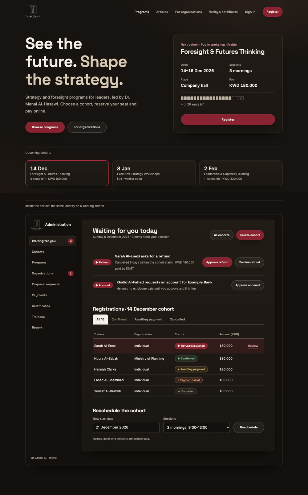
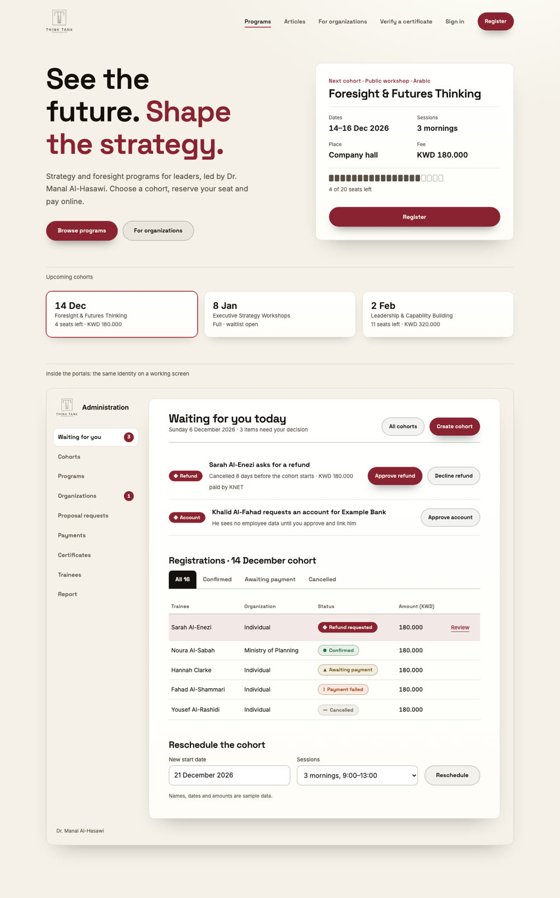
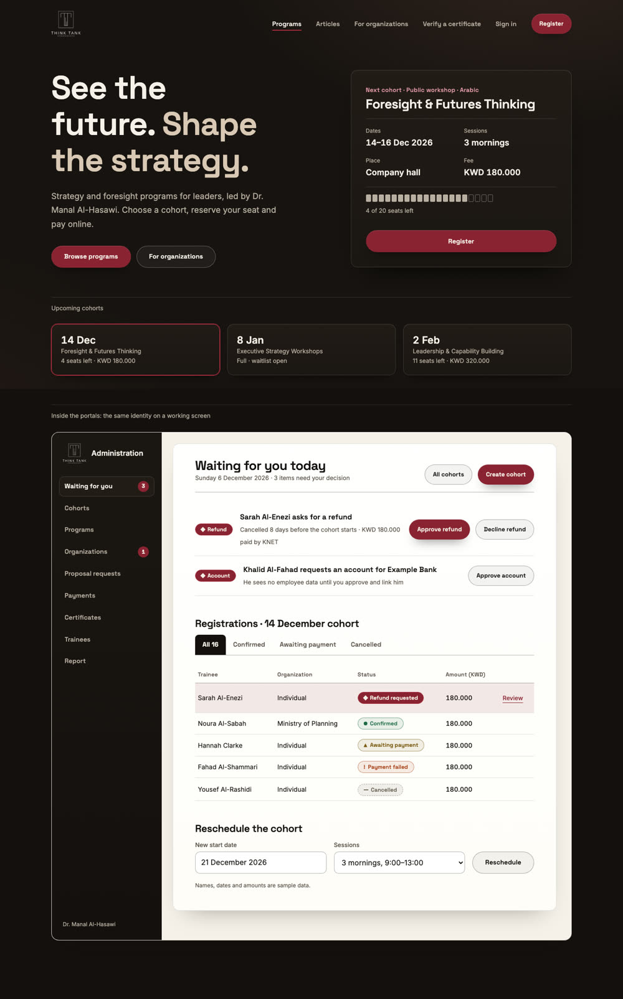
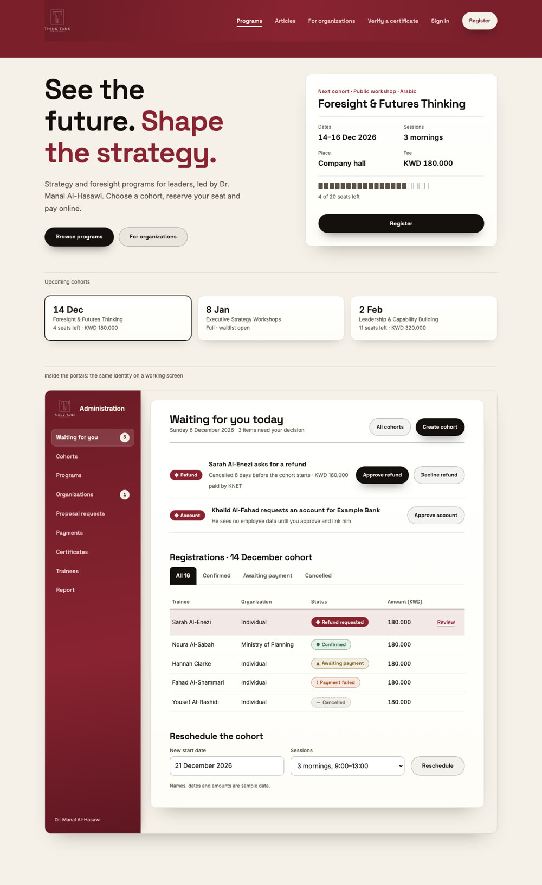
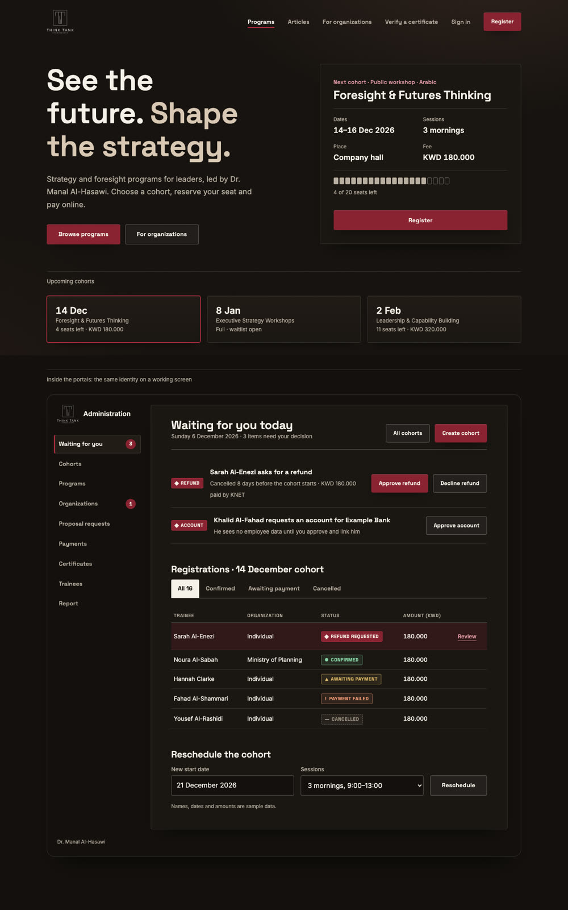

خمسة اقتراحات للشكل، كلها بألوانها
كل اقتراح صفحة حيّة بالإنجليزي فيها واجهة الموقع وشاشة من البوابات. افتحه وتنقّل بين الخمسة من الشريط أسفل الصفحة، ثم اختر واحداً نطبّقه على الشاشات الإحدى والثلاثين.
ما قاله عبدالله: الألوان غير مناسبة، الواجهة بالإنجليزية لا بالعربية، البطاقة المعلّقة لا تفيد، والمطلوب شكل احترافي يناسب من تتعامل مع شركات كثيرة. وقرار عدنان: ألوان الدكتورة وهوية قريبة من موقعها.

A · موقعها كما هو، ممتدّاً
أقرب الخمسة لموقعها الحالي: داكن في كل مكان، الخطوط نفسها، أزرار مدوّرة نبيذية، وبطاقات داكنة بحدود رفيعة.
- يناسب
- من يريد أن تبدو البوابات امتداداً مباشراً لموقعها
- الخطر
- جداول طويلة على خلفية داكنة لساعات عمل
افتح A

B · نهاري
ألوانها نفسها بأدوار معكوسة: الكريمي أرضية، البنّي للنص، والنبيذي للأزرار والعناوين. فاتح في الموقع والبوابات.
- يناسب
- القراءة الطويلة والطباعة، وشكل شركات هادئ
- الخطر
- أبعد عن إحساس موقعها الداكن
افتح B

C · واجهة داكنة، وعمل فاتح
الموقع العام داكن مثل موقعها، والبوابات فاتحة بشريط جانبي داكن. الزائر يرى هويتها، ومن يعمل يقرأ براحة.
- يناسب
- الجمع بين هويتها وراحة العمل اليومي
- الخطر
- شكلان في نظام واحد؛ الانتقال بينهما يُلاحَظ
افتح C

D · النبيذي في المقدمة
النبيذي يصير لوناً حاضراً لا لمسة: شريط علوي وشريط جانبي نبيذيان، والباقي فاتح، والأزرار بالبنّي الداكن.
- يناسب
- حضور أقوى للعلامة وتميّز عن مواقع الاستشارات
- الخطر
- أجرأ الخمسة؛ النبيذي بمساحة كبيرة قد يُتعب
افتح D

E · رسمي هادئ
ألوان A الداكنة، لكن بزوايا حادّة بدل المدوّرة، وجداول مسطّرة، وحالات بحروف كبيرة صغيرة. أقرب لشكل البنوك والجهات.
- يناسب
- جمهور حكومي ومالي يتوقع شكلاً رسمياً
- الخطر
- أقل دفئاً، ويبتعد قليلاً عن أزرار موقعها المدوّرة
افتح E
ما يجمع الخمسة
- ألوانها الثلاثة فقط: البنّي الداكن، الكريمي، النبيذي.
- خطوط موقعها: Space Grotesk للعناوين و Inter للنص.
- شعارها كما هو.
- إنجليزي، من اليسار إلى اليمين.
- بلا بطاقة معلّقة ولا تذاكر ولا أختام.
بعد الاختيار
- يُطبَّق الشكل على الشاشات الإحدى والثلاثين والعرض التقديمي من ملف واحد.
- الترجمة إلى الإنجليزية جارية الآن بالتوازي.
- يمكن الدمج: مثلاً ألوان C مع زوايا E.